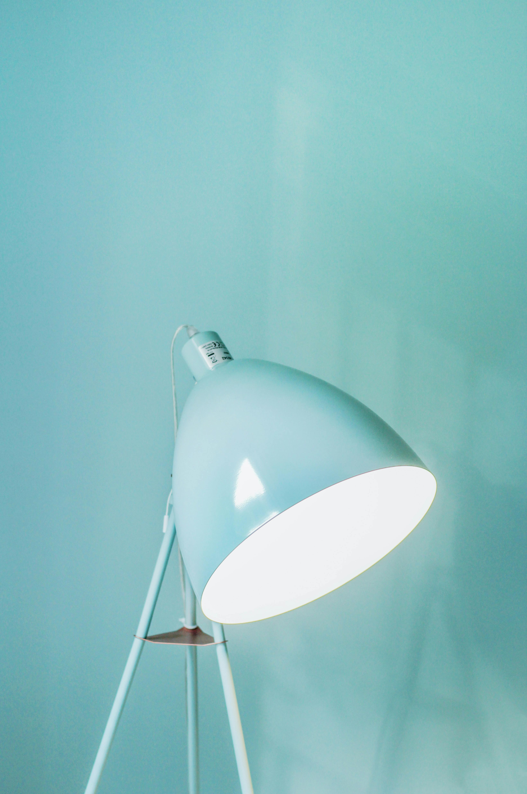
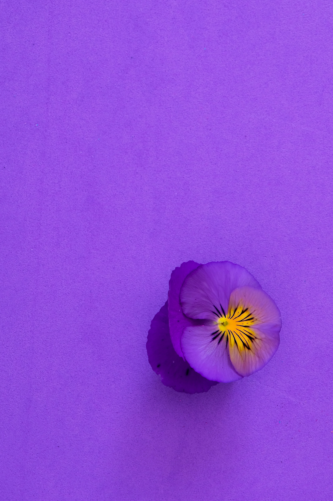

BACKSTAGE TALKS
info@backstagetalks.com
by DAN GOLD
SEE HERE
by MAE MU
SEE HERE
by ADAM BIRKETT
SEE HERE
by ANTONIO DILLARD
SEE HERE
by AMBROSE CHUA
SEE HERE

by TOM SWINNEN
SEE HERE

by DANIELE LEVIS PELUSI
SEE HERE
by ANNA SHVETS
SEE HERE
Issue #8
Issue #7
Issue #6
Issue #5
Issue #4
Issue #3
Issue #2
Issue #1